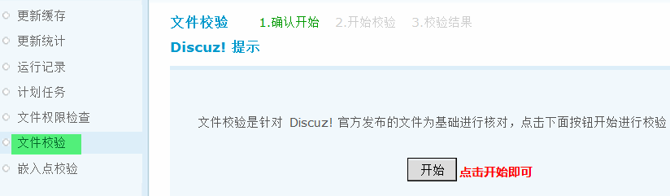
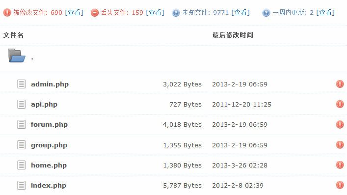

文件校验
文件校验，这个功能可以让管理员即时发现站点程序是否被非法篡改。可以详细的了解到哪些文件被修改过，哪些文件是被增加的，哪些文件被删除了，一目了然。可以很快的从中发现问题、解决问题。
操作路径：【后台】=>【工具】=>【文件校验】
点击“开始”按钮，开始校验，如下图所示：
校验结果，如图：
“丢失”的文件你应当通过 FTP 及时将文件补充进来，否则可能站点运行不正常。
“被修改”、“未知”的文件应当引起警惕，必须确认文件是你自己修改或者是某个插件添加的，否则请删除未知文件和恢复被修改的文件。